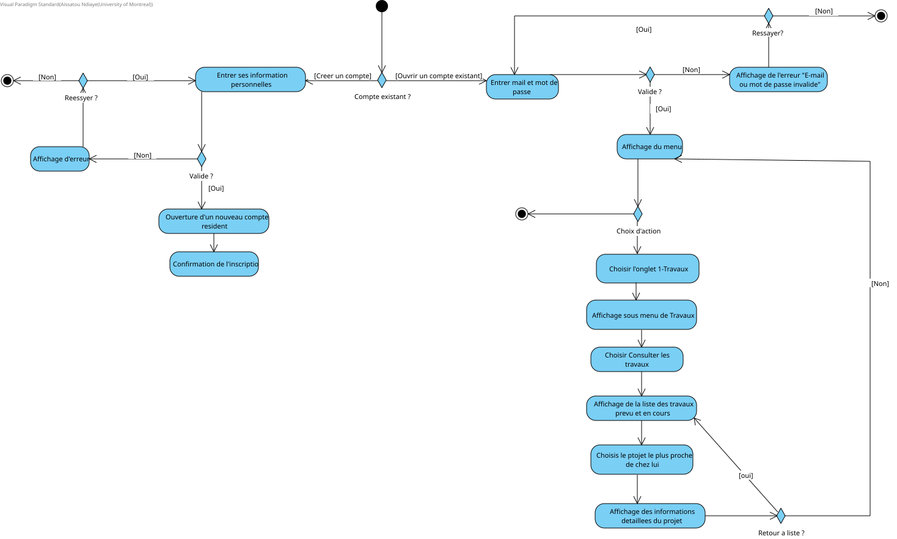
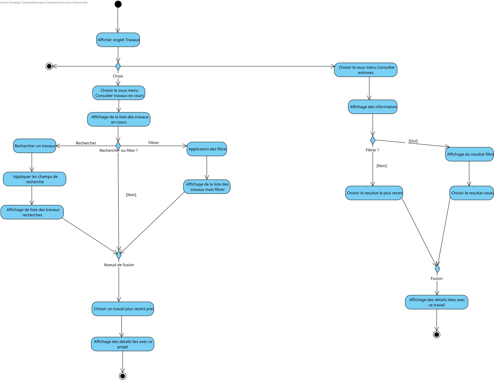
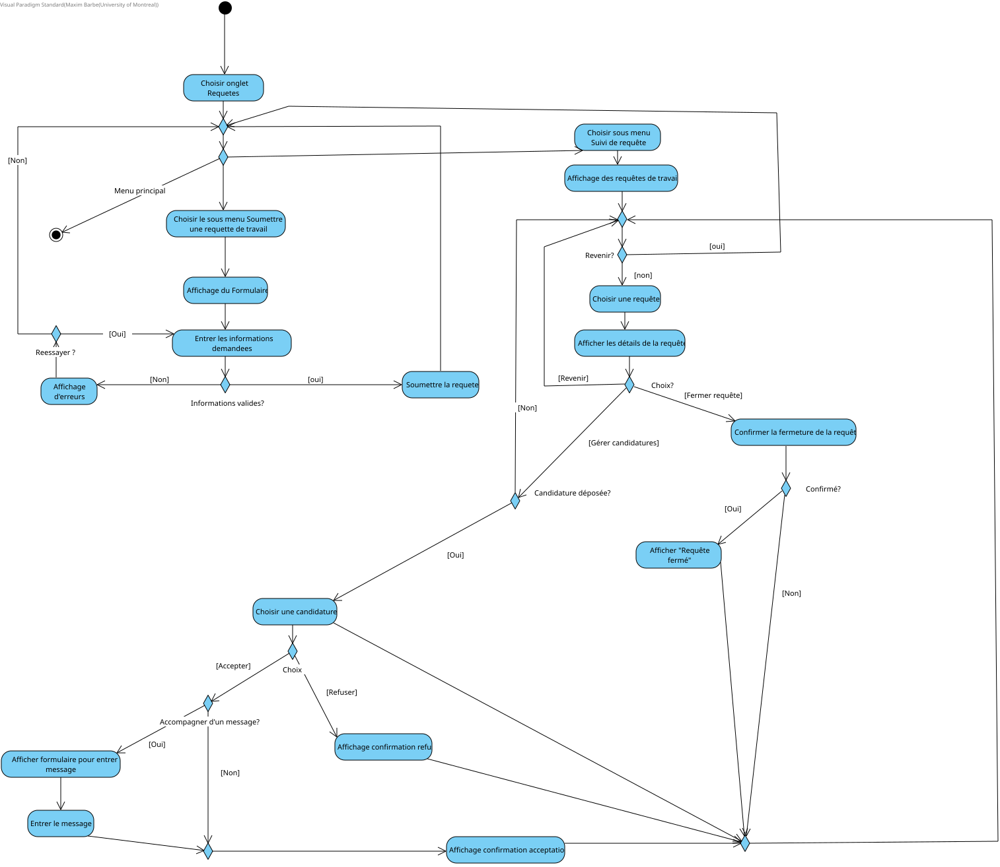
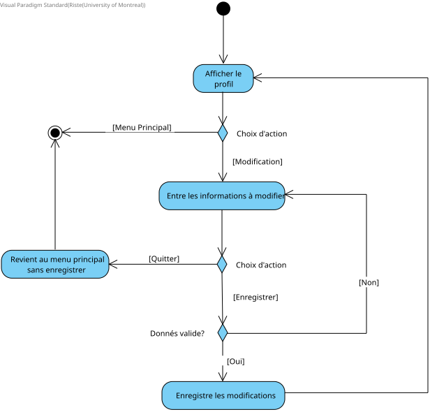
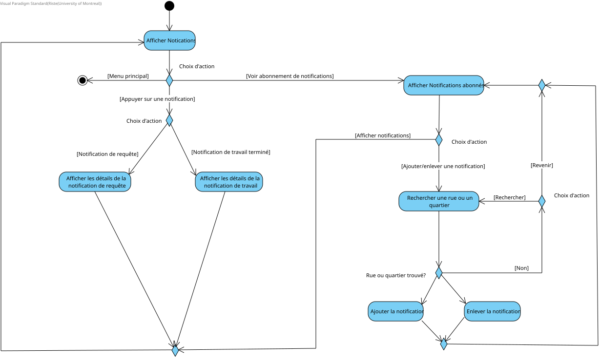
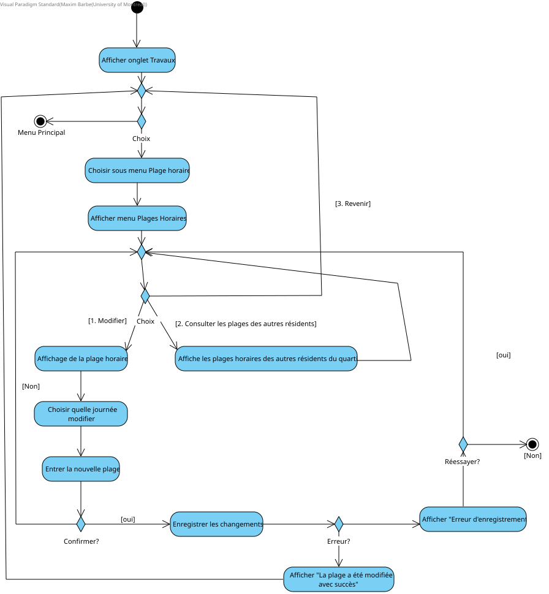
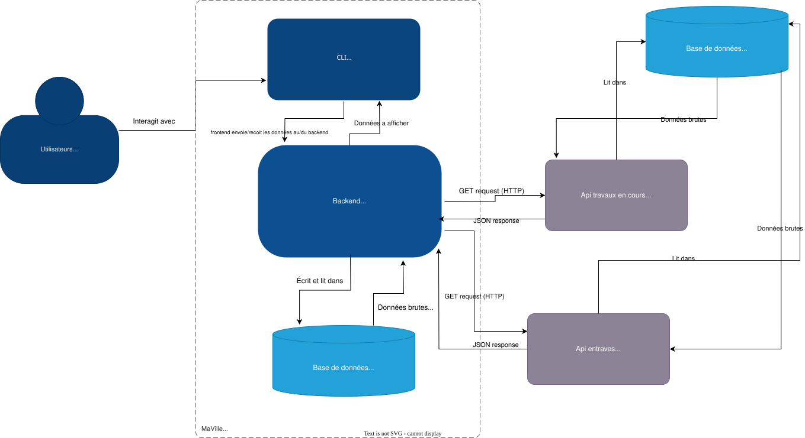
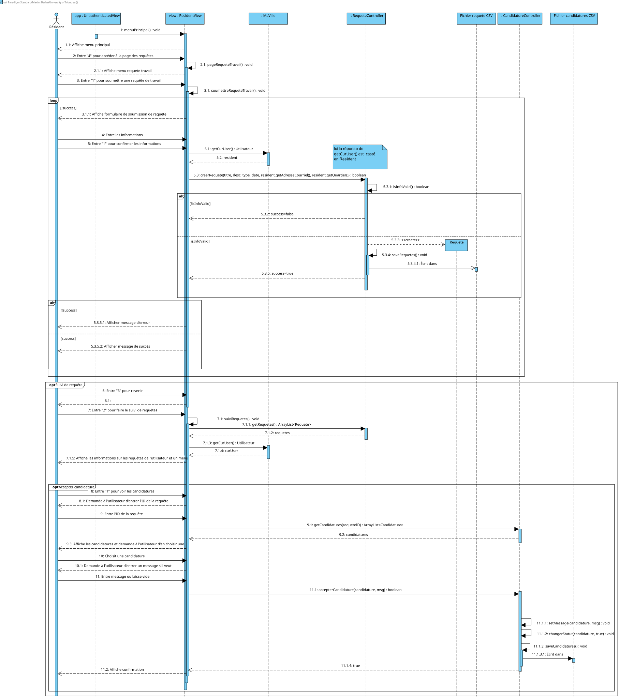

Cadre du projet
Introduction
Il y a beaucoup de travaux qui se font tous les jours dans la ville de Montréal, soit par le public ou le privé ce qui nuit aux citoyens et à leur capacité à se déplacer rapidement. Les citoyens sont souvent mal informés et surpris par des travaux qui les empêchent d’effectuer leurs déplacements habituels. Il y a donc un manque de collaboration et de communication entre les intervenants effectuant des travaux et la population. Nous pourrons régler ce problème en créant une application qui permettra une meilleure communication ainsi que d’offrir la possibilité à la population de donner leur opinion sur les travaux à venir (par exemple mettre des commentaires sur des travaux à venir, sondage pour quelle dates sont plus convenables). En créant cette plateforme nous pourrons permettre à la ville et au constructeurs privés de mieux considérer les besoins des citoyens et prendre les meilleures décisions qui limiteront les frustrations.
Échéancier
Devoir 1
À noter que les heures passées sont des estimations faites à la fin, donc peuvent être sur-estimées ou sous-estimées, et que cela compte toutes les fois qu'on a changé quelque chose.
- Activité/Tâche; Participants; Nombre d'heures passées; Semaines
- Exigences:
- Glossaire (Aissatou Ndiaye): 3h; Semaines 3-6
- Diagrammes CU (Maxim Barbe, Aissatou Ndiaye, Riste Popov): 6h; Semaines 3-6
- Diagrammes Activite (Maxim Barbe, Aissatou Ndiaye, Riste Popov): 6h; Semaines 4-6
- Scenarios (Maxim Barbe, Aissatou Ndiaye): 10h; Semaines 3-6
- Analyse:
- Risques / Besoins non-fonctionnels (Maxim Barbe, Riste Popov): 2h; Semaines 3-6
- Besoins materiels / Solution de stockage / Solution d'intégration (Maxim Barbe, Aissatou Ndiaye, Riste Popov): 6h; Semaines 3-6
- Autres:
- Rédaction du rapport (Juste écrire les informations, pas penser aux réponses): (Maxim Barbe, Aissatou Ndiaye, Riste Popov); 2h; Semaines 1-6
- Rédaction du README: (Maxim Barbe); 1h; Semaines 5-6
- Prototype: (Maxim Barbe); 10h; Semaine 4-6
Devoir 2
- Exigences:
- Glossaire (Maxim Barbe): 1h; Semaine 12
- Diagrammes CU (Maxim Barbe): 3h; Semaine 11-12
- Diagrammes Activite (Aissatou Ndiaye, Maxim Barbe): 3h; Semaines 11-12
- Analyse
- Besoins matériels / Solution de stockage / Solution d'intégration (Maxim Barbe): 1h; Semaine 11
- Conception:
- Architecture: (Aissatou Ndiaye, Maxim Barbe); 3h; Semaines 11-12
- Diagramme de classes: (Maxim Barbe, Aissatou Ndiaye); 10h; Semaines 11-12
- Diagrammes de séquence (Maxim Barbe, Riste Popov): 6h; Semaines 11-12
- Autres:
- Rédaction du rapport (Juste écrire les informations, pas penser aux réponses): (Maxim Barbe, Aissatou Ndiaye); 2h; Semaines 10-12
- Rédaction du README: (Maxim Barbe); 1h; Semaine 12
- Implémentation: (Maxim Barbe); 20h; Semaines 10-12
- Tests: (Maxim Barbe, Aissatou Ndiaye, Riste Popov); 1h; Semaines 11-12
- Documentation: (Maxim Barbe); 3h; Semaine 10
- À venir:
- Implémentation: Semaines 13-15
- Tests: Semaines 13-15
- Documentation: Semaines 13-15
Hypothèses (optionnel)
On assume que les tous les objets possèdent un ID unique qui leur permettra d'être identifié.
Exigences
Après de nombreuses rencontres avec le client et une familiarisation avec les activités de recyclage et compostage, nous avons préparé un glossaire rassemblant les termes et expressions clés caractérisant l'environnement.
Glossaire
- Intervenant
- Désigne toute personne, organisation ou entité impliquée dans la réalisation des travaux publics ou privés affectant la ville.
- Résident
- Fait référence à toute personne vivant ou habitant à Montréal, qui est directement ou indirectement affectée par les travaux publics et privés.
- Le public
- Fait référence aux organismes et institutions relevant du gouvernement ou des autorités municipales qui sont responsables de la planification, de la gestion et de l'exécution des travaux dans la ville.
- Le privé
- Désigne les acteurs et organisations qui ne relèvent pas du secteur public, mais qui sont impliqués dans la réalisation de travaux ou de projets affectant la ville.
- Planification participative
- La contribution des residents a la planification des travaux en soumettant l'heure a laquelle ils aimeraient que les travaux debutent ou meme donner leur avis sur ces derniers.
- Perturbation/Entrave
- Une interruption ou modification des conditions normales de circulation, de mobilité ou d'accès aux services due aux travaux publics ou privés.
- Intervention
- Désigne toute action ou travail réalisé par un intervenant, qu'il soit public ou privé, dans le cadre de la gestion ou de la maintenance de la ville.
- Particuliers
- Les individus entreprenant des projets de construction ne provenant pas des secteurs publics et privés.
- Embouteillage
- La situation lorsqu'un grand nombre d'auto font la file et avance lentement (autre mot pour traffic).
- Chantiers
- Emplacements où se font les travaux.
- Application MaVille
- L'application MaVille est l'application que nous concevons ayant pour but de réduire la distance entre les résidents et les intervenants quant aux projets de construction.
- Identifiant de la ville
- Code de 8 chiffres fourni par la ville que les intervenants doivent fournir lors de l'inscription
- Notifications personnalisées
- Un résident peut personnaliser ses notifications en s'abonnant à divers rues ou quartiers et recevoir des notifications lorsqu'il y a des changements à des projets affectant ces quartiers.
- Info Entraves Et Travaux
- Service de la ville qui permet d'obtenir des informations sur les travaux en cours dans la ville de Montréal et qui permet également d'obtenir des informations sur les entraves causés par ceux-ci.
- Type de travaux
- On catégorise les travaux en leur attribuant un type de travail.
Les différents types de travaux sont les suivants:- Travaux routiers
- Travaux de gaz ou électricité
- Construction ou rénovation
- Entretien paysager
- Travaux liés aux transports en commun
- Travaux de signalisation et éclairage
- Travaux souterrains
- Travaux résidentiels
- Entretien urbain
- Entretien des réseaux de télécommunication
- Statut du projet
- Un projet peut prendre différents types dépendamment de sa progression.
Les statuts disponibles sont:- En cours
- Suspendu
- Termine
Cas d'utilisation

Scénarios
Scénario principal
- Le système affiche la page d'accueil.
- L'utilisateur ouvre la page d'inscription.
- L'utilisateur choisit entre résident ou intervenant.
- L'utilisateur remplit le formulaire d'inscription.
- Le système valide les informations entrées.
- Le système affiche Compte créé avec succès.
- Le système redirige l'utilisateur vers la page d'accueil.
Scénarios alternatifs
Scénario principal
- Le système affiche le menu principal.
- Le résident ouvre la page des travaux.
- Le système affiche le sous-menu de la page des travaux.
- Le résident choisit l'option Consulter les travaux en cours ou futur.
- Le système affiche la liste des travaux en cours ou futurs appropriés.
- Le résident choisit l'annonce du travail le plus récent près de chez lui.
- Le système affiche les informations détaillés de ce dernier (date de debut et fin, type de travaux ...)
Scénarios alternatifs
Scénario principal
- Le système affiche le menu principal.
- Le résident choisit l'onglet Travail.
- Le système affiche le sous-menu de l'onglet Travail.
- Le résident choisit l'option Soumettre une requête de travail.
- Le système affiche le formulaire à remplir.
- Le résident remplit tous les champs du formulaire.
- Le résident soumet le formulaire.
- Le système vérifie que tous les champs sont remplis.
- Le systeme indique au résident que le formulaire a été envoyé avec succès et envoie une notification confirmant l'envoi.
Scénarios alternatifs
Scénario principal
- Le système affiche le menu principal.
- Le résident choisit l'onglet Notifications.
- Le système affiche toutes les notifications recues.
Scénario principal
- Le système affiche le menu principal.
- L'intervenant appuie sur l'onglet Soumettre un nouveau projet.
- Le système affiche le formulaire à remplir.
- L'intervenant entre les informations tel que la description, le type de travaux, les rues affectes, date debut et fin etc.
- L'intervenant soumet le projet.
- Le système informe l'intervenant de tous les conflits avec les préférences des résidents.
- L'intervenant confirme qu'il veut continuer.
- Le système lui indique que le projet a été soumis avec succes
- Le système ajoute le nouveau projet de travail et y donne le statut de Prévu.
Scénarios alternatifs
Scénario principal
- Le système affiche le menu principal.
- L'intervenant appuie sur l'onglet Mettre à jour les informations sur un chantier.
- Le système lui affiche la liste des travaux prévus ou en cours.
- L'intervenant accède au projet qu'il souhaite mettre à jour.
- Le système lui affiche les informations détaillés du projet.
- L'intervenant fait les modifications nécessaires.
- L'intervenant confirme les modifications.
- Le système enregistre les modifications.
Scénarios alternatifs
Scénario principal
- Le système affiche le menu principale.
- L'intervenant appuie sur l'onglet Requêtes de travail.
- Le système affiche la liste des requêtes existantes.
Scénario principal
- Appel au cas Consulter la liste des requêtes de travail
- L'intervenant choisit la requête qui l'intéresse.
- Le système affiche les détails de la requête.
- L'intervenant appuie sur Envoyer la candidature.
- Le système affiche Votre candidature a été soumise..
Scénario principal
- Le système affiche le menu principal.
- L'utilisateur appuie sur l'onglet Profil.
- Le système affiche les données personnelles du client.
- L'utilisateur appuie sur Modifier profil.
- L'utilisateur entre les nouvelles données dans les champs à modifier.
- L'utilisateur confirme l'enregistrement.
- Le système enregistre les nouvelles modifications
- Le système affiche le nouveau profil modifié.
Scénarios alternatifs
Scénario principal
- Le système affiche le menu principal.
- Le résident ouvre la page Requête de travail.
- Le système affiche le menu de la page.
- Le résident ouvre la page Mes requêtes.
- Le système affiche les requêtes du résident.
- Le résident choisit une requête.
- Le système affiche les détails concernant la requête de travail.
Scénarios alternatifs
Scénario principal
- Le système affiche le menu principal.
- Le résident choisit l'onglet Travaux.
- Le système affiche le sous-menu de l'onglet Travaux.
- Le résident choisit l'onglet Plages horaires.
- Le système affiche la plage horaire du résident.
- Le résident appuie sur Modifier.
- Le résident effectue les modifications à sa plage horaire.
- Le résident enregistre les changements.
- Le système affiche Changements enregistrés et affiche la nouvelle plage horaire modifiée.
Scénarios alternatifs
Diagramme d'activités
Diagramme Principal Resident

Consulter les travaux en cours et les entraves causées par ces derniers

Requête de travail

Profil

Notifications personnalisées

Fournir Plage Horaire

Analyse
Risques
- Informations pas mises à jour ou inexactes:
- Justification: La présence d'informations pas mises à jours ou inexactes peut causer des pertes de temps et du trouble pour les utilisateurs. Par exemple, un utilisateur voit, sur l'application, une information erronée qui dit qu'il y a de la construction sur une certaine rue qu'il prend pour aller au travail. Cet utilisateur devra alors perdre du temps et de l'énergie à trouver une alternative qui rallonge probablement le temps qu'il dépense pour aller au travail.
- Solution: La solution proposée est d'envoyer quotidiennement des notifications aux intervenants des travaux qu'ils entreprennent leur rappelant d'updater les informations concernant le chantier si certaines informations ont changé. Puisque les intervenants seront rappelés à tous les jours, il y aura alors moins de risque d'oubli qui cause la présence d'informations inexactes.
-
Faible participation:
- Justification: Le bon fonctionnement de l'application dépend de la participation des responsables des projets de construction et des résidents. On compte sur les responsables pour afficher des nouveaux projets de construction sur l'application et de les mettre à jour. S'ils ne participent pas, alors on est dans la même situation que la situation initiale où les résidents seront surpris par l'apparition de nouveaux chantiers de construction et l'application ne servira à rien. Si les résidents ne participent pas, alors les responsables ne pourront pas faire des choix informés sur les plages horaires de construction.
- Solution: La ville devrait obliger les entreprises à utiliser l'application s'ils veulent obtenir des projets de construction à Montréal et donner des amendes aux entreprises qui commencent des projets sans faire les efforts pour les ajouter sur l'application. Cela assurerait alors une forte participation et les résidents pourront en profiter. Pour les résidents, nous suggérons de lancer une campagne de publicité afin de rendre l'application connue pour augmenter le taux de participation.
-
Présence d'utilisateurs malintentionnés:
- Justification: Comme toute application sur l'Internet, il y a toujours la possibilité qu'il y aille des utilisateurs qui veulent causer du trouble et nuire à l'expérience de l'utilisation de l'application. On peut penser, par exemple, qu'il se peut que certains utilisateurs "spamment" des requêtes de travail absurdes ou des signalements à la ville. Cela nuit au bon fonctionnement de l'application puisque les intervenants vont d'abord devoir voir s'il s'agit d'une requête légitime avant de faire quoi que ce soit.
- Solution: Le solution proposée est la possibilité de "Report" des utilisateurs qui causent du trouble et que ce "report" soit ensuite envoyé à la ville. La ville pourra ensuite analyser la situation et décider de la punition appropriée, par exemple "mute" ou bannir l'utilisateur.
-
Panne du site:
- Justification: Il est possible qu’il y ait des pannes, ce qui rendrait la plateforme hors-service. Si la plateforme est souvent hors-service, les gens ne vont plus y faire confiance et vont arrêter de l’utiliser. De plus, les informations ne seront pas à jour s'il arrive souvent que les intervenants essaient de mettre à jour les travaux, mais la plateforme n’est pas disponible.
- Solution: La solution suggérée est d'acheter plus qu'un serveur. Dans le cas qu'un des serveurs tombe en panne, alors ceux en backup pourront prendre la relève et assurer que l'application reste fonctionnelle.
-
Attaques contre le site:
- Justification: Comme l'application est opérée par la ville et que plusieurs grandes entreprises y participent, l'application peut être la cible de divers cyberattaques (i.e. DDOS). Ces cyberattaques peuvent mettre en danger les données sensibles des utilisateurs, ainsi que bloquer l'accès au site pendant de longues durées de temps. S'il y a une fuite de données, alors les utilisateurs seront alors plus hésitants à utiliser le site et l'utiliseront moins.
- Solution: Afin de contrer les attaques contre le site, nous proposons comme solution que, avant même le déploiement de l'application, la ville entre en contact et engagent des experts en cybersécurité qui sauront les étapes à entreprendre si une attaque survient.
Besoins non-fonctionnelles
- Sécurité: Le premier besoin non fonctionnel nécessaire est un besoin de sécurité puisque l'application va manipuler des données sensibles comme les emails/mots de passe des résidents, ainsi que des intervenants. On veut vraiment empêcher des fuites de données, donc il est nécessaire de faire les actions nécessaires pour assurer une bonne sécurité des données.
- Interface facile à utiliser: Le deuxième besoin non fonctionnel nécessaire est une interface utilisable puisque l'application sera utilisée par le grand public. Il y aura toutes sortes de personnes qui utiliseront l'application comme des personnes âgées, des jeunes, des personnes avec certains handicaps, etc. Il faut que l'application soit facile à utiliser pour chacun de ces groupes afin qu'ils puissent en profiter au maximum.
- Supporter les différentes langues: Le troisième besoin non fonctionnel nécessaire est le support pour les différentes langues. Comme on sait bien, Montréal est une ville très multi-culturelle avec une population qui parle différentes langues. Sachant cela, lorsqu'on développe une application pour une telle population cible, on ne veut pas forcer tout le monde à utiliser l'application dans un ou deux langages puisque cela pourrait nuire à leur expérience.
- Disponibilité: On veut que l'application soit disponible le plus possible (presque en permanence) afin que les utilisateurs puissent accéder aux informations n'importe quand. Si l'application a un problème de disponibilité, alors les utilisateurs vont chercher des sources alternatives pour obtenir leurs informations. Cela causera alors une diminution de la participation à l'application puisque les utilisateurs préféreront aller vers une source d'information où ils sauront qu'ils pourront obtenir l'information désirée.
- Efficacité: On peut facilement s'imaginer que certains résidents vont vouloir utiliser l'application avant de partir pour voir s'il y a des nouveaux projets de construction sur le chemin qu'ils prennent pour se rendre au travail. Ces utilisateurs ne veulent pas passer beaucoup de temps à traverser plusieurs pages sur l'application, il faut alors que les informations nécessaires soient facilement et rapidement accessibles.
Besoins matériels
Tout d'abord, nous avons besoin d'acheter au moins 2 serveurs pour assurer le bon déroulement de l'application. Le premier sera utilisé pour host notre site web, alors que les autres seront utilisés comme backup dans le cas où le premier tombe en panne. Cela nous permettra de nous assurer que l'application fonctionnera presque en tout temps et qu'il n'y a pas de panne qui cause l'arrêt complet du fonctionnement de l'application. De plus, comme il s'agit de la ville qui demande aux entreprises de participer à l'application, alors nous suggèrons à la ville de fournir du matériel aux participants/intervenants afin qu'ils ne doivent pas dépenser leur propre argent. Afin de réduire les coûts au maximum, notre suggestion est de tout simplement fournir des petits téléphones/appareils intelligents préconfigurés qui pourront uniquement lancer l'application. Ces appareils n'ont pas besoin d'un processeur extrêmement puissant ou de grande mémoire de stockage, il est uniquement nécessaire qu'ils puissent utiliser le système d'une manière fluide. Finalement, comme nous envisagerions d'utiliser une architecture de stockage cloud, on a pas besoin de matériel supplémentaire pour héberger les données.
Solution de stockage
Initialement, nous avions envisagé de stocker nos données en utilisant des fichiers JSON, mais nous avons décidé d'y aller avec des fichiers CSV. Nous avons fait ce changement puisqu'il est plus facile de manipuler les fichiers CSV que les fichiers JSON. En faisant ce changement, nous perdons la certaine structure que le format JSON nous offrait, mais, comme énoncé plus haut, cela nous permet de manipuler plus facilement les données. Cela nous permet d'assurer une meilleure intégrité des données puisqu'il n'y aura pas de pertes de données dues à des erreurs lors du parsing. Nous pensons que ce changement mène à un net positif à cause de son effet sur l'intégrité des données. Ensuite, afin d'assurer la sécurité des données, nous devrons implémenter ou utiliser des mécanismes d'encryption/hashing afin de sécuriser nos données sensibles. Finalement, pour une version officielle déployée, nous envisagerions d'utiliser une architecture de stockage cloud afin de maximiser la scalabilité et la disponibilité des données. En effet, il est facile de "scale up" une base de données dans le Cloud puisque la plupart des fournisseurs offrent simplement la possibilité de payer pour obtenir plus d'espace. De plus, la plupart des fournisseurs de base de données sur le cloud comme Google ou Amazon sont presque toujours disponibles, donc il n'y a pas vraiment de souci quant à la disponibilité des données.
Solution d'intégration
Il y a plusieurs intégrations possibles que l'on peut faire avec notre application. La première possible est que, s'il existe déjà des applications opérées par la ville qui nécessitent l'authentification, alors on peut laisser l'utilisateur se connecter en utilisant le même compte que sur ces applications à la place de le forcer à se créer un nouveau compte spécifiquement pour MaVille. Un bon exemple de ce type de comportement est Google où on peut se connecter à plusieurs applications (Gmail, Drive, etc.) avec le même compte. Pour faire cela fonctionner, il faudrait qu'à la création de compte, l'utilisateur indique qu'il utilise un compte de la ville et que cela redirige vers un service d'authentification indépendant. Toutefois, dans le cas où ce service ne fonctionne pas, notre application doit quand même permettre aux utilisateurs qui utilisent leur compte de la ville de se connecter. Lors de la création de compte, MaVille devra donc stocker les données du compte de la ville de l'utilisateur dans sa propre base de données afin de permettre la connection si le service externe ne fonctionne pas. La deuxième intégration possible est avec le service existant Info entraves et travaux. Le service Info entraves et travaux offre des fonctionnalités qui ne sont pas disponibles sur MaVille telle que pouvoir visualiser l'emplacement des travaux sur une carte. On pourrait donc, via un API, aller chercher ces données de la carte et les afficher sur notre application. Toutefois, pour faire cela, il faut que MaVille utilise la même facon d'identifier les travaux d'une manière unique que le service Info entraves et travaux afin de pouvoir accéder à ces données. Afin de ne pas briser le flux d'informations, on veut afficher ces données que si l'API nous donne une réponse positive rapidement.
Conception
Architecture
Modele C4

Diagramme de classe
Note: Il va falloir zoomer pour mieux voir (ca devrait pouvoir être fait sans problèmes puisqu'il s'agit d'un format svg), désolé pour ca. J'ai fait de mon mieux pour compresser le mieux sur Visual Paradigm.

Diagramme de sequence
Consulter les entraves

Soumettre une requête de travail

Consulter la liste des requête de travail

Justification des choix du design
Afin de favoriser l'évolution et l'intégration de l'application, nous avons dû prendre des considérations lors de la conception du design.
Tout d'abord, le premier choix que nous avons fait est le patron d'architecture. Pour cela, nous avons choisi d'y aller avec le modèle MVC. Nous avons choisi l'architecture MVC
puisque cette architecture offre une décomposition modulaire assez intuitive, maximise la cohésion et facilite la réutilisation. En effet, en séparant la logique des données, on peut réutiliser les modèles dans d'autres applications
et définir des nouveaux controllers. En créant un controller pour chaque modèle, on améliore également la cohésion car chaque module ou classe est responsable d'une tâche spécifique, ce qui rend le code plus compréhensible et plus facile à maintenir.
Les responsabilités sont clairement définies, évitant ainsi la confusion et les chevauchements fonctionnels. Nous avons également choisi
de décomposer le frontend en trois vues différentes, une vue pour les utilisateurs non-connectés, une vue pour les résidents et une vue pour les intervenants. Selon nous, cette décomposition maximise la cohésion et minimise le couplage puisque
les fonctionnalités réunies dans une vue dépendent du statut de l'utilisateur (non-connecté, résident ou intervenant) ainsi les composants peuvent être modifiés ou remplacés sans affecter les autres parties du système.
et il y a très peu de communication entre les vues. Il serait donc facile d'ajouter, par exemple, une troisième vue pour un autre type d'utilisateur puisque cet ajout n'affecterait aucunement les vues de résident et d'intervenant (Modularité).
Concernant les vues, afin de favoriser l'abstraction, nous avons défini une classe abstraite View et une interface ConnectedView. La classe View possède
toutes les méthodes et les attributs communs à toutes les vues (connectées ou non), alors que l'interface ConnectedView définit les méthodes que seules les vues connectées doivent implémenter.
En faisant cela, on définit donc un certain "template" que les vues doivent respecter et assure que toutes les vues ont essentiellement une structure générale. Ainsi au niveau de la flexiblite grâce à l'utilisation de principes d'abstraction, d'encapsulation et de cohésion,
l'application peut facilement s'adapter aux nouvelles exigences ou à la modification des besoins
Prototype
Cette version du prototype a été fait avec Maven. Pour s'assurer que ca marche bien, la version de Maven avec laquelle le projet a été fait est apache-maven-3.9.6 et la version de java est JDK-17.
Trois comptes résident et intervenant sont préconfigurés pour utiliser l'application:
-
Comptes résidents:
- Email:resident1@gmail.com; Password: resident1
- Email:resident2@gmail.com; Password: resident2
- Email:resident3@gmail.com; Password: resident3
- Email:resident4@gmail.com; Password: resident4
-
Comptes intervenants:
- Email:intervenant1@gmail.com; Password: intervenant1
- Email:intervenant2@gmail.com; Password: intervenant2
- Email:intervenant3@gmail.com; Password: intervenant3
- Email:intervenant4@gmail.com; Password: intervenant4
Documentation JavaDoc:
La documentation JavaDoc complète de l'application est disponible au lien suivant : Documentation JavaDoc
Afin d'éxécuter le code, il faut run les commandes suivantes:
cd ./applicationsi on est pas dans le répertoire /application.java -cp prototype2-1.jar org.prototype.MaVillepour éxécuter le fichier éxécutable.
Afin d'éxécuter les tests unitaires, il faut pull le répertoire prototype2 au complet de GitHub
- S'assurer d'être dans le répertoire avec le fichier
pom.xml. - Éxécuter la commande
mvn testpour éxécuter le fichier avec les tests unitaires.